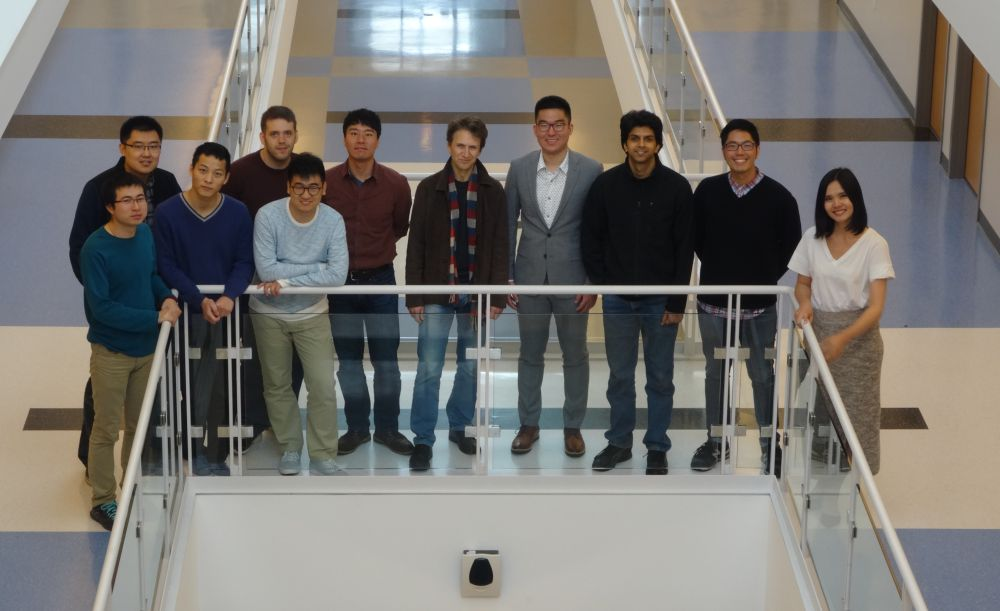

People
Members of the Visual Analytics and Imaging (VAI) Lab, past and present.

PhD Students
-
Rikathi Pal
University of Calcutta, India
Visualization-driven interpretability for medical imaging AI
-
Snehal Tomar
Indian Institute of Technology (IIT) Madras, India
Deep Generative Models for Image and Video Synthesis.
-

-

MSc Students
Undergraduate Students
The Gang of 2016

Alumni
PhD graduates
| Name | Year | Thesis | Now |
|---|---|---|---|
| Xinyu Zhang | 2025 | Towards Human-AI Collaborative Exploration of Empty Spaces in High-Dimensional Data and Parameter SpacesShandong University, China | Meta |
| Arjun Krishna | 2025 | A Unified Framework for High-Resolution CT Image Synthesis via Conditioned Modeling of Anatomy, Pathology, and TextureSRM University, India and U Texas | Johns Hopkins University |
| Bhavya Ghai | 2022 | Towards Fair and Explainable AI using a Human-Centered ApproachIndian Institute of Information Technology, India | Amazon |
| Anjul Tyagi | 2022 | Exploring Large Parameter Spaces with Machine Learning and Data VisualizationIndian Institute of Information Technology, India | Meta |
| Hyunjung Jenny Lee | 2021 | Cluster Analysis and Visualization in High-Dimensional SpaceEwha Womans University, Korea | Tableau |
| Heyi Li | 2021 | Understanding the Black Box: A Methodology for Interpreting Deep Neural Networks for Domain ScientistsTsinghua University, China | China Academy of Space Technology |
| Darius Coelho | 2021 | Methodologies and Implementations to Enable General Participation in VisualizationGoa University, India | Linköping University (Sweden) |
| Ayush Kumar | 2020 | Visual Analytics Methodology for Multivariate Volumetric and Spatio-Temporal DataLLM IIT Jaipur, India | ATT |
| Jun Wang | 2018 | Visual Causality AnalysisShandong University, China | |
| Cong Xie | 2018 | Visual Analytics of Heterogeneous High-Dimensional Datasets to Support Machine Learning TasksZhejiang University, China | Meta |
| Shenghui Cheng | 2018 | Visual Analytics for Relation Discovery in Multivariate DataShandong University, China | Jinan University, China |
| Salman Mahmood | 2018 | Organizing High-Dimensional Data through Semantics DiscoveryLahore University of Management Science, Pakistan | |
| Sungsoo Ha | 2017 | SAFE: A Safe, Accurate, Flexible, and Efficient Computed Tomographic SystemAjou University, Korea | Meta |
| Eric Papenhausen | 2017 | Manual, Automatic, and Semi-Automatic Performance OptimizationAlfred College and Stony Brook University, USA | Meta |
| Bing Wang | 2016 | High Dimensional Data Exploration, Representation and GenerationUniversity of Science and Technology, China | |
| Puripant (Joe) Ruchikachorn | 2016 | Integrating Visualizations Into the Authoring of NarrativesChulalongkorn University, Thailand and Tokyo University, Japan | Chulalongkorn University, Thailand |
| Zhiyuan Zhang | 2014 | Visual Association Mining of Multivariate DataShandong University, China | Meta |
| Wei Xu | 2012 | An Efficient Framework for High-Quality Low-Dose CT Reconstruction and Reference-based Image RestorationZhejiang University, China | Brookhaven National Lab |
| Ziyi Zheng | 2012 | Efficient Reconstruction and Visualization of CT DataZhejiang University, China | |
| Julia EunJu Nam | 2011 | Exploratory visual analytics in high-dimensional spaceAjou University, Korea | Microsoft |
| Supriya Garg | 2010 | Tools to enrich the user experience in visual analyticsIIT Bombay, India | |
| Shengying Li | 2008 | Refraction in graphics and medical imagingPeking University, China and Tokyo University, Japan | Barclays Bank |
| Fang Xu | 2007 | Acceleration of 3D computed tomography reconstruction using commodity graphics hardware (GPUs)Xiamen University, China | |
| Lujin Wang | 2007 | Feature-driven illustrative visualization and graphicsTsinghua University, China | NVIDIA |
| Neophytos Neophytou | 2006 | GPU-accelerated point-based volume rendering; Color space CAD: Direct color manipulation in 3D color spaceUniversity of Cyprus, Cyprus | Bloomberg |
| Sarang Lakare | 2004 | Ray-based exploration of volumetric dataUniversity of Pune, India | TouchApp (Pune, India) |
| Wei Li | 2004 | Accelerating simulation and visualization on graphics hardwareXi'an Jiaotong University, China | |
| Ingmar Bitter | 2002 | Volume visualization of object interiorsUniversity of Halle-Wittenberg, Germany | ClaorNav (Toronto, Canada) |
MS graduates
| Name | Year | Thesis / project | Now |
|---|---|---|---|
| Md Naimul Hoque | 2020 | Outcome-Explorer: A Causality Guided Interactive Visual Interface for Interpretable Algorithmic Decision Making | U Maryland, College Park |
| Wen Zhong | 2018 | Evolutionary Visual Analysis of Deep Neural Networks | |
| Dan Zhang | 2017 | Google Glass for Personalized Augmentations of Data Visualizations | National Academy of Science, China |
| Jisung Kim | 2016 | VIS for NLP | Texas A&M |
| Nafees Ahmed | 2016 | Gamification for Visual Analytics | Waymo |
| Jaewoo Pi | 2011 | Simulation of X-ray scattering | SUNY Korea |
| Ambuj Thacker | 2011 | Appointment and calendar visualization | Citibank |
| Markus Lacay | 2010 | Visual analytics for game design | Disney Games |
| Charles Rojo | 2010 | Information-augmented urban visualization | Intelepix, LLC |
| Kshitij Padalkar | 2009 | User steerable colorization and highlighting | Bloomberg |
| Erin Golub | 2009 | Visual information encoding | |
| Xin Guan | 2008 | DTI Visualization | |
| Mauricio Maurer | 2008 | High-dimensional feature classification in volumetric datasets | |
| Lei Zhang | 2008 | Visualization of facial dynamics | Microsoft |
| Aili Li | 2008 | Frequency-space volume rendering | |
| Warren Leung | 2007 | SIMD-aware raycasting on GPUs | Microsoft |
| Yue Hu Ou | 2006 | Colorization and color transfer | |
| Sean Li | 2006 | Functional brain analysis | |
| Oleg Mishchenko | 2006 | Space-filling curves for volume rendering | The Ohio State University |
| Satprem Pamudurthy | 2005 | Face recognition using dynamic features | |
| Yiping Han | 2005 | Rendering of mirage effects using the lattice Boltzmann model, High-dimensional data visualization | |
| Haik Lorenz | 2005 | Facadlet: A facade generating primitive for urban architecture | University of Potsdam, Germany |
| Kith Pradhan | 2005 | Volume classification with multi-dimensional voxel signatures | Applied Math and Statistics Department, Stony Brook |
| JeeHyun Huang | 2005 | Video visualization | |
| Rong Su | 2005 | Volume visualization | |
| Peter Imrich | 2004 | The interactive dendrogram for visual data mining | Computer Associates, Long Island, NY |
| Tomihisa Welsh | 2003 | Colorization of greylevel images and video | Alienskin Software, NC |
| Uday Chebrolu | 2003 | Interactive transfer function modification for volume rendering | |
| Michael Steinberg | 2003 | EngineRoom: A comparative environment for volume rendering engines | Northrop Grunman, NY |
| Hari Varadhan | 2003 | Volume ablation rendering | |
| Jon Sweeney | 2002 | Shear-warp deluxe: analyzing and extending the shear-warp volume rendering algorithm | |
| Manjushree Nulkar | 2001 | Splatting with shadows | |
| David Goldstein | 2000 | Virtual reality techniques for CAD/CAM design | Computer Associates, Long Island, NY |
Undergraduate researchers
| Name | Year | Project | Now |
|---|---|---|---|
| Anton Kanevsky | 2011 | Appointment and calendar visualization | |
| Arunesh Mittal | 2011 | Visual analytics for healthcare | Johns Hopkins University |
Postdoctoral researchers
| Name | Year | Project | Now |
|---|---|---|---|
| Dr. Fengbao Yang | 2008 | Night vision image colorization |